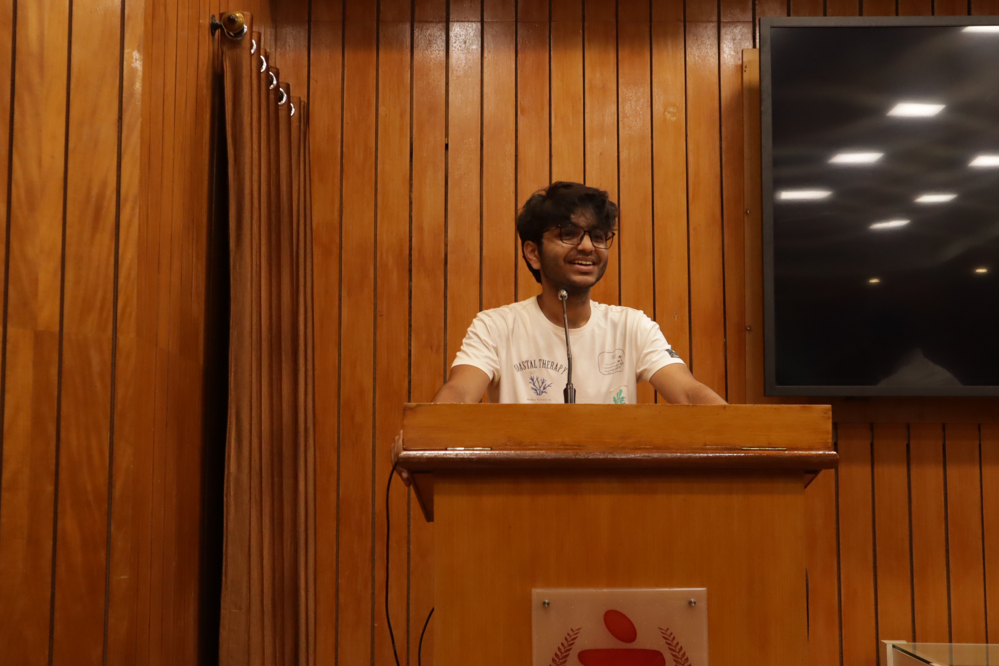

Shiven Gupta

Autonomous Systems Developer,
Publicity & Communications Expert
Education
Btech-Maths and Comp Sc-Manipal Institute of Tech
12th-Heritage School-93.5
10th-Heritage School-95.2
Experience
Blank 101-Head of Publicity
SEPTEMBER 2024 - PRESENT
As Head of Publicity, I boost engagement for Blank 101 by promoting
events through classroom announcements, social media, and social channels.
This role sharpens my skills in marketing and communication while fostering
a vibrant community around public speaking at our college
Formula Manipal-Driverless Member
April 2024 - PRESENT
As a member of the Formula Manipal Driverless team, I work on
autonomous navigation by integrating ROS and Gazebo simulations.
Using camera data, we detect cones, create waypoints, and calculate
steering and thrust values through model predictive control.
Currently, I am focused on developing hardware systems, specifically
brake-by-wire and steer-by-wire, to bring this setup from simulation to the actual car.
This role deepens my expertise in autonomous systems, simulation tools, and vehicle dynamics.
Skills
- Autonomous Systems
- ROS(Robot Operating Systems)
- Machine Learning
- Computer Vision
- Python Programming
- Computer Vision
- Project Management
- Public Speaking and Communication
- Social Media and Marketing
Courses
Awards
Second Place (National) & First Place (Regional) - NXP AIM 2024
Developed an autonomous line-following car equipped with object detection
and track sign recognition using camera and LiDAR inputs. Competed in a two-tiered
competition, placing first in the regional round and second nationally in the grand finale.
Contact me
Thank you